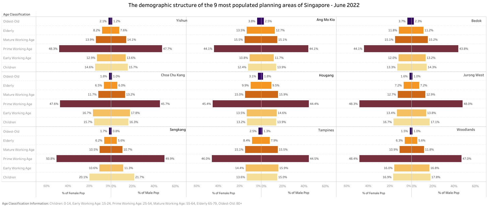
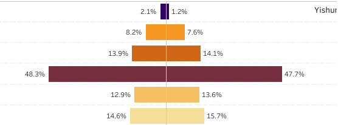
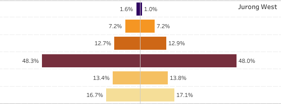
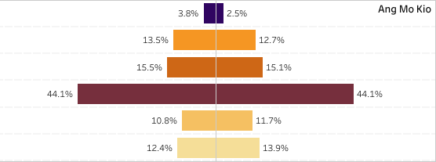
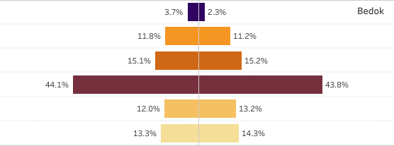
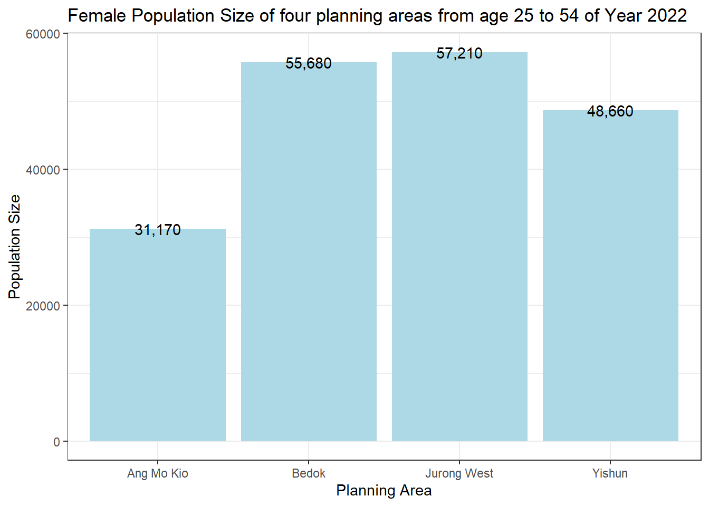
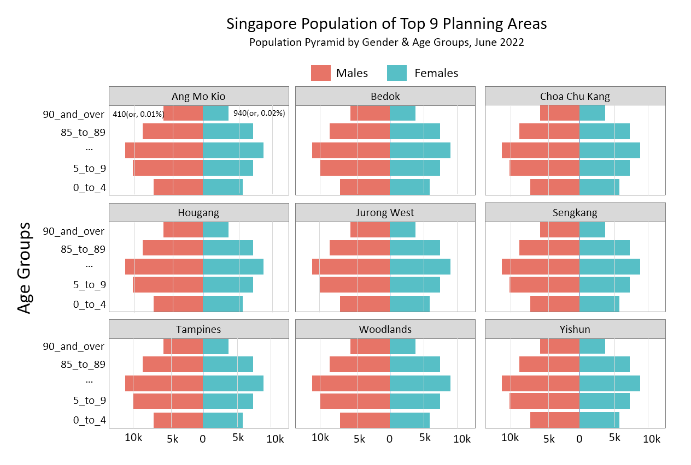
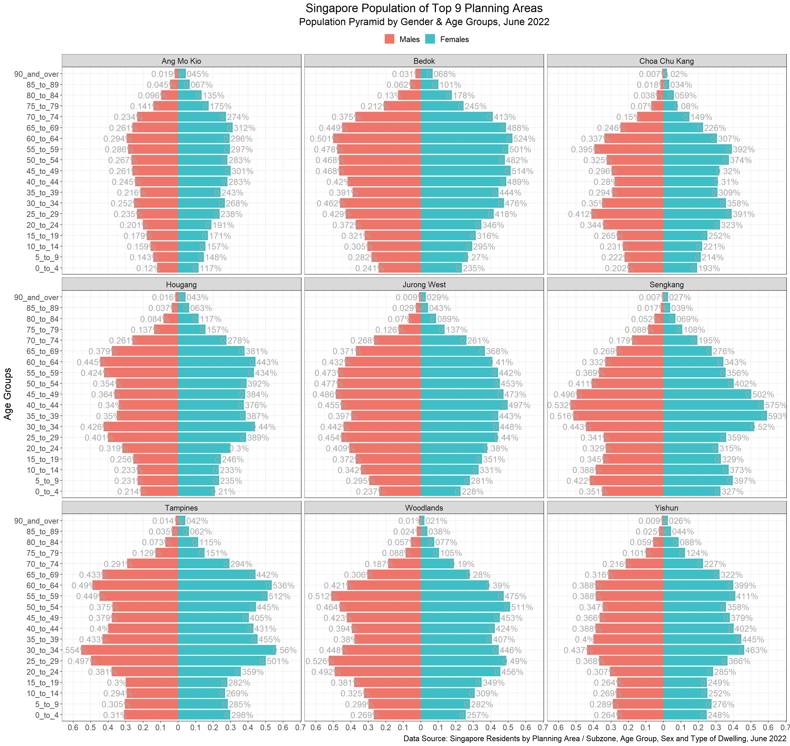

# import necessary packages
pacman::p_load(scales, dplyr, ggplot2, tidyverse)Exercise 2: Age-sex pyramid of Singapore Population using R
1. Overview
In this Take-home exercise 2, I’ve chosen one of my classmate take-home exercise 1 submission and analyzed the charts regarding clarity and aesthetics. The original design will be remade using the data visualization principles and best practices learned from lessons 1 and 2.
The dataset used in take-home exercises 1 and 2 is from Singapore Residents by Planning Area / Subzone, Age Group, Sex and Type of Dwelling, June 2022 from the Department of Statistics, Singapore, and processed by RStudio with tidyverse family of packages and visualized by ggplot2 and related packages.
2. Data Preparation
2.1 Loading packages
2.2 Import data
dsl <- "Data Source: Singapore Residents by Planning Area / Subzone, Age Group, Sex and Type of Dwelling, June 2022"
# read data from csv file
data <- read_csv("./data/respopagesextod2022.csv",
col_types = list(
PA = col_character(),
SZ = col_character(),
AG = col_character(),
Sex = col_character(),
TOD = col_character(),
Pop = col_integer(),
Time = col_integer()
)
)
# ensure all data are year 2022
pop_data <- data %>%
filter(Time == 2022) %>%
filter(PA %in% c("Ang Mo Kio",
"Bedok",
"Choa Chu Kang",
"Hougang",
"Jurong West",
"Sengkang",
"Tampines",
"Woodlands",
"Yishun")
) %>%
# rearrange the order for age group
mutate(AG = fct_relevel(AG, "0_to_4","5_to_9")) %>%
# rearrange the order for male and female
mutate(Sex = fct_relevel(Sex, "Males","Females"))2.3 Data Attributes
| No. | Attribute Name | Description of Attribute |
|---|---|---|
| 1 | PA | Planning Area |
| 2 | SZ | Subzone |
| 3 | AG | Age Group |
| 4 | Sex | Male or Female |
| 5 | TOD | Type of Dwelling |
| 6 | Pop | Size of Population |
| 7 | Time | Year of the data collected |
3. Critique
3.1 Original Design
The original design shown as below:

3.2 Zoom-in
The chart shows that planning area having same proportion of prime woring age on Female between Yishun and Jurong West.
| Population size of Yishun | Population size of Jurong West |
|---|---|
|  |  |
The chart also shows that planning area having same proportion of prime woring age on Female between Ang Mo Kio and Bedok.
| Population size of Ang Mo Kio | Population size of Bedok |
|---|---|
|  |  |
3.3 Clarity
3.3.1 Grouping on Age Groups
The original design shown in 3.1 has grouped 19 age groups into six main groups, but it does not provide charities on the new six groups introduced; but introduces extra confusion to the chart.
For instance, group 10_to_14 has been grouped into Early Working Age, while the legal working age in Singapore starts from 14 but with limitations. MOM.
The age group 80_to_84 has been grouped into oldest-old on the chart, Publications such as Suzman R, Riley MW. Introducing the “oldest old”. Milbank Mem Fund Q Health Soc. 1985 Spring;63(2):177-86. PMID: 3846808. shows that oldest-old refers to those aged 85 and above. It is important to have the references on the chart published for new terms introduced, to avoid any misunderstanding from public.
The bar of Age-sex pyramid chart are design to provide trends for the variable when more data or bins are shown on the chart, hence, it is not necessary to further group the bins to redunce the size of bins, unless the chart unable to display all the bins on a single chart.
3.3.2 Data Revelation
The original design showed population size in percentile for all the planning areas. The percentile of male and female in each planning area is calculated based on the population size of the planning area, not on common population size (such as using the total population size of Singapore).
The chart shows that the proportion of famale in prime woring age is same between Yishun and Jurong West, and the same between Ang Mo Kio and Bedok. However, the data below shows that the population size of female from age 25 to 54 has large differences between Ang Mo Kio and Bedok.
Hence, the original chart does not reveal the actual size or the correct proportion of each age group size versus the entire population.
pop_sum <- pop_data %>%
filter(PA == "Ang Mo Kio"|
PA == "Bedok" |
PA == "Jurong West" |
PA == "Yishun" ) %>%
filter(Sex == "Males") %>%
filter(AG %in% c("25_to_29",
"30_to_34",
"35_to_39",
"40_to_44",
"45_to_49",
"50_to_54")) %>%
group_by(PA) %>%
summarise(total = sum(Pop), .groups="keep")
pop_sum %>%
ggplot(aes(y = total, x = PA)) +
geom_bar(stat = "identity",
fill="lightblue",
show.legend = FALSE) +
geom_text(aes(PA, total,
label = scales::comma(total),
fill = NULL),
data = pop_sum) +
labs(x = "Planning Area",
y = "Population Size",
title = "Female Population Size of four planning areas from age 25 to 54 of Year 2022") +
theme_bw()
3.3.3 Age-sex pyramid chart
The majority of age-sex pyramid provides color differences for male and female, the original chart having only color differences for age groups but not gender. The meaning of the bar on the discovered after when referring to the labels on the bottom of the chart.
3.4 Aesthetics
3.4.1 Legend - Coloring
The chart does not show a legend for the color applied to different age classifications; it would be better to have a legend for colors applied.
3.4.2 X-Axis reference line
The chart figure on each bar provides extra difficulty when comparing the length of the bar among different groups visually.
3.4.3 Agx-Sex order
The chart should generally display the male population on the left and the female population on the right side to align with the general practice of adopting the age-sex pyramid chart.
4. Design Proposed
A proposed design of the Age-sex pyramid chart is shown as follows, The chart shown the exact same results to public regardless of using proportion of population size or actual population size. It provides a constant visual results to the public on using both proportion or actual size of population.
It provide color difference and reference line for male and female in each planning area for better comparsion, and reference line are provided in each planning area when compare the male and famle population size among each age group or planning area.

5. Final Design
5.1 Data Preparation
First, calculate the population size and population proportion between male and female at age group level for each planning area.
# calculate total population size
Pop_Prop <- pop_data %>%
summarise(Pop_Prop = sum(Pop))
# calculate population size and proportion for
# Male and Female of each age group for each planning area
pop_summary <- pop_data %>%
group_by(PA, AG, Sex) %>%
summarise(Pop_Size = sum(Pop),
Pop_Size / Pop_Prop * 100,
.groups="rowwise")5.2 Visualize Population Size
Next, Display the Age-sex pyramid chart based on population size of each planning area for top 9 planning areas in Singapore.
# label position adjustment based on gender
label_position_nudge <- function(df){
ifelse(df$Sex == "Males", (sd(df$Pop_Size)/3)*-1, sd(df$Pop_Size)/3)
}
# tick position adjustment based on gender
tick_position_nudge <- function(br) {
ifelse(abs(br) >= 1000, paste0(abs(br)/1000, "k"), abs(br))
}
# age-sex pyramid chart
pop_summary %>%
# transform the data to show male on the left
mutate(
Pop_Size = ifelse(Sex == "Males", Pop_Size * (-1), Pop_Size * 1),
Pop_Label = paste0(scales::comma(abs(round(Pop_Size))))
) %>%
# plot
ggplot(aes(x = Pop_Size, y = AG, label = Pop_Label)) +
# fill the value for the plot
geom_col(aes(fill = Sex), inherit.aes = TRUE) +
# display label for the bar
geom_text(aes(label = Pop_Label),
position = position_nudge(x = label_position_nudge(pop_summary)),
size = 5,
color="darkgrey") +
# change color of male and female
scale_fill_manual("", values = c("#EF756A", "#3FBFC5")) +
# add x-ticks
scale_x_continuous("",
breaks = scales::pretty_breaks(n=10),
labels = function(br) tick_position_nudge(br)
)+
# add tick labels
labs(title = "Singapore Population of Top 9 Planning Areas",
subtitle = "Population Pyramid by Gender & Age Groups, June 2022",
x = "",
y = "Age Groups",
caption = dsl
) +
# group by planning areas
facet_wrap(~ PA, ncol = 3) +
# apply theme
theme_bw() +
# adjust legend
theme(
text = element_text(size = 16),
legend.position = 'top',
axis.title.x=element_blank(),
plot.title = element_text(hjust = 0.5),
plot.subtitle = element_text(hjust = 0.5)
)5.3 Visualize Population Proportion
Alternatively, The Age-sex pyramid chart can show the same results based on the proportion of population size, so that the actual population size of each planning area can be hidden from the chart to public if there is a such requirement.
# label position adjustment based on gender
label_position_nudge <- function(df){
ifelse(df$Sex == "Males", (sd(df$Pop_Prop)/3)*-1, sd(df$Pop_Prop)/3)
}
# age-sex pyramid chart
pop_summary %>%
# transform the data to show male on the left
mutate(
Pop_Prop = ifelse(Sex == "Males", Pop_Prop * (-1), Pop_Prop * 1),
Pop_Label = paste0(abs(round(Pop_Prop, digits = 3)), "%")
) %>%
# plot
ggplot(aes(x = Pop_Prop, y = AG, label = Pop_Label)) +
# fill the value for the plot
geom_col(aes(fill = Sex), inherit.aes = TRUE) +
# display label for the bar
geom_text(aes(label = Pop_Label),
position = position_nudge(x = label_position_nudge(pop_summary)),
size = 5,
color="darkgrey") +
# change color of male and female
scale_fill_manual("", values = c("#EF756A", "#3FBFC5")) +
# add x-ticks
scale_x_continuous("",
breaks = scales::pretty_breaks(n=10),
labels = function(br) tick_position_nudge(br))+
# add tick labels
labs(title = "Singapore Population of Top 9 Planning Areas",
subtitle = "Population Pyramid by Gender & Age Groups, June 2022",
x = "",
y = "Age Groups",
caption = dsl
) +
# group by planning areas
facet_wrap(~ PA, ncol = 3) +
# apply theme
theme_bw() +
# adjust legend
theme(text = element_text(size = 16),
legend.position = 'top',
axis.title.x=element_blank(),
plot.title = element_text(hjust = 0.5),
plot.subtitle = element_text(hjust = 0.5)
)